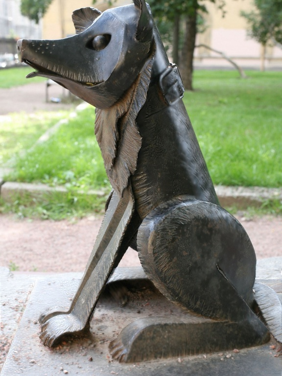
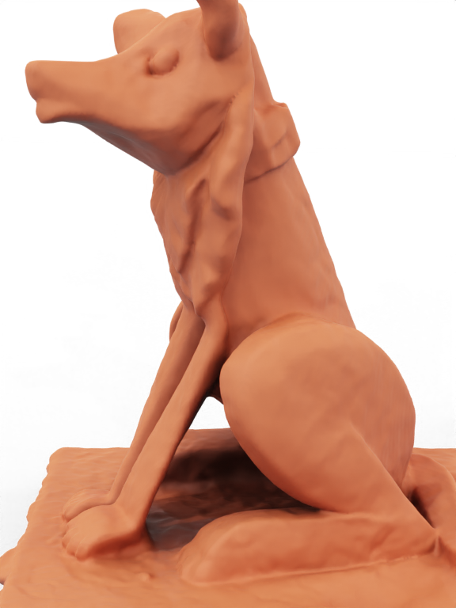
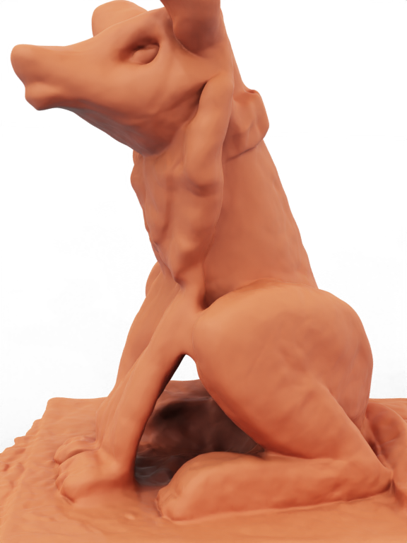
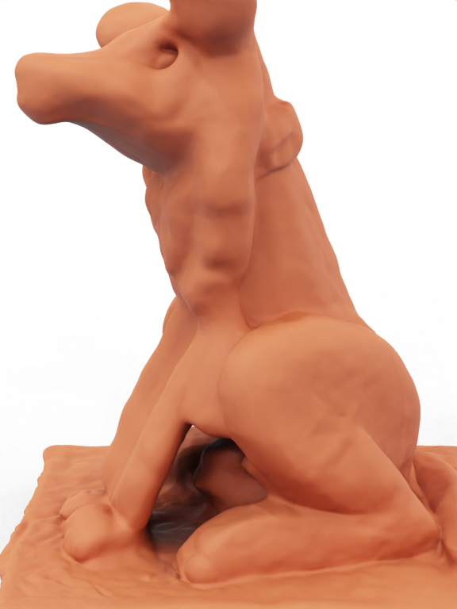

Abstract
Paper abstract.
Additional section

Video
Visualization
Text for visualization section.




Resources
Paper: Our paper and supplement are available on official publisher name, on arXiv, and locally.
Poster: Our poster is available here.
Presentation: Our presentation slides are available here.
Code: Our code is available on Github.
Data: The data to reproduce our experiments is available here.
Citation
@article{BibtexEntryName,
title={{Paper Title}},
journal={Journal Name},
publisher={Publisher Name},
author={Author Names},
year={Publication Year}
}
Acknowledgments
Paper acknowledgments.